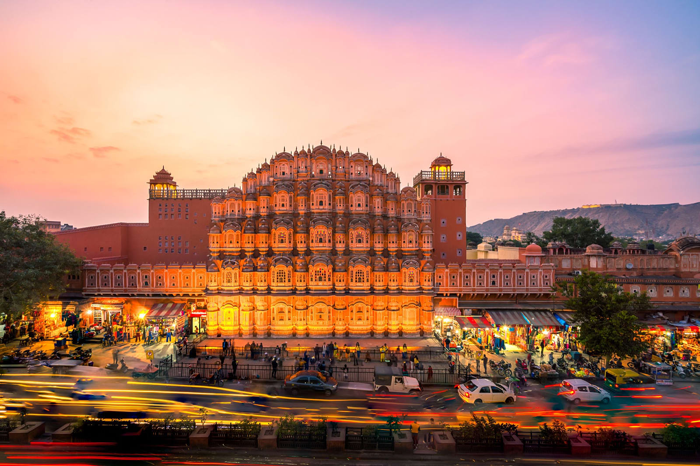
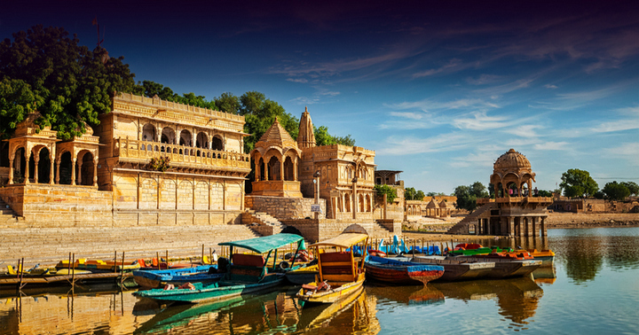
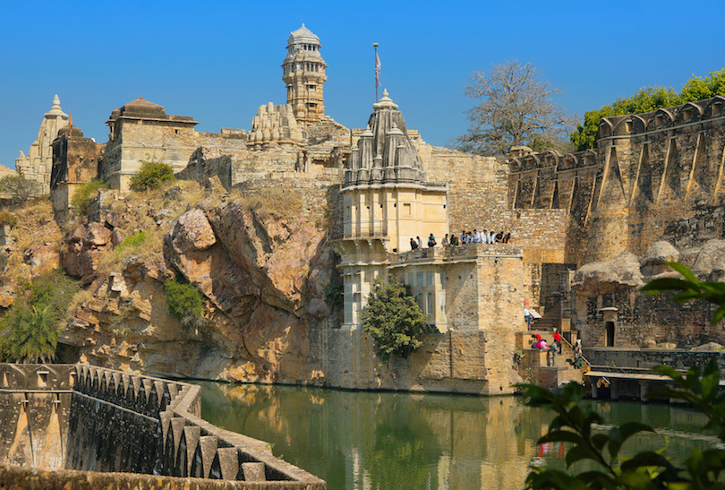
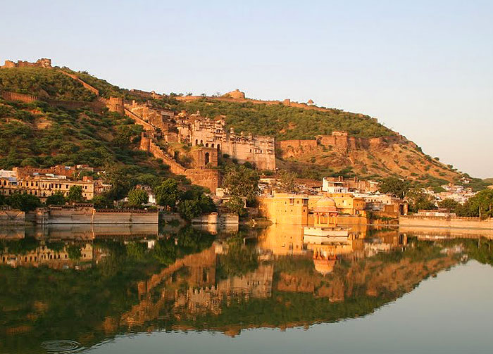

Rajasthan Land of Kings is a state in northern India.
It covers 342,239 square kilometres (132,139 sq mi) or 10.4 percent of India's total
geographical area. It is the largest Indian state by area and the seventh largest by
population. It is on India's northwestern side, where it comprises most of the wide
and inhospitable Thar Desert (also known as the Great Indian Desert) and shares a
border with the Pakistani provinces of Punjab to the northwest and Sindh to the we
st, along the Sutlej-Indus River valley. It is bordered by five other Indian states: Punjab to the
north; Haryana and Uttar Pradesh to the northeast; Madhya Pradesh
to the southeast; and Gujarat to the southwest. Its geographical location is 23.3 to 3
0.12 North latitude and 69.30 to 78.17 East longitude, with the Tropic of Cancer passing through its
southernmost tip.
Its major features include the ruins of the Indus Valley Civilisation at Kalibangan and Balathal, the
Dilwara Temples, a Jain pilgrimage site at Rajasthan's only hill station, Mount Abu, in the ancient
Aravalli mountain range and in eastern Rajasthan, the Keoladeo National Park of Bharatpur, a World
Heritage Site known for its bird life. Rajasthan is also home to three national tiger reserves, the
Ranthambore National Park in Sawai Madhopur, Sariska Tiger Reserve in Alwar and the Mukundra Hills Tiger
Reserve in Kota.
The state was formed on 30 March 1949 when Rajputana – the name adopted by the British Raj for its
dependencies in the region – was merged into the Dominion of India. Its capital and largest city is
Jaipur. Other important cities are Jodhpur, Kota, Bikaner, Ajmer, Bharatpur and Udaipur. The economy of
Rajasthan is the seventh-largest state economy in India with ₹10.20 lakh crore (US$140 billion) in gross
domestic product and a per capita GDP of ₹118,000 (US$1,600). Rajasthan ranks 29th among Indian states
in human development index.
Places to visit in Rajasthan
JAIPUR
Jaipur is a popular tourist destination in India and forms a part of the west Golden
Triangle tourist circuit along with Delhi and Agra (240 km, 149 mi). It also serves as a gateway to
other tourist destinations in Rajasthan such as Jodhpur (348 km, 216 mi), Jaisalmer (571 km, 355 mi),
Udaipur (421 km, 262 mi), Kota (252 km, 156 mi) and Mount Abu (520 km, 323 mi).
On 6 July 2019, UNESCO World Heritage Committee inscribed Jaipur the "Pink City of India" among its
World Heritage Sites.The city is also home to the UNESCO World Heritage Sites Amer Fort and Jantar
Mantar.

BIKANER
Bikaner is a city in the northwest of the state of Rajasthan, India. It is located 330
kilometres (205 mi) northwest of the state capital, Jaipur. Bikaner city is the administrative
headquarters of Bikaner District and Bikaner division.
Formerly the capital of the princely state of Bikaner, the city was founded by Rao Bika in 1488 CE and
from its small origins it has developed into the fourth largest city in Rajasthan. The Ganges Canal,
completed in 1928, and the Indira Gandhi Canal,
completed in 1987, facilitated its development.
JAISALMER
Jaisalmer, nicknamed "The Golden city", is a city in the Indian state of Rajasthan, located 575
kilometres (357 mi) west of the state capital Jaipur. The town stands on a ridge of yellowish sandstone
and is crowned by the ancient Jaisalmer Fort. This fort contains a royal palace and several ornate Jain
temples. Many of the houses and temples of both the fort and of the town below are built of finely
sculptured sandstone. The town lies in the heart of the Thar Desert (the Great Indian Desert) and has a
population, including the residents of the fort, of about 78,000. It is the administrative headquarters
of Jaisalmer District. Jaisalmer was once the capital of Jaisalmer State.

MOUNT ABU
Mount Abu is a hill station that offers exceptional views of the surrounding area. A rocky plateau of a summit means that there is a large space to explore, not to mention an abundance of attractions. Nakki Lake is a must-see spot near Mount Abu, and you can even rent an affordable paddle boat to get on the water and admire the hills surrounding the lake. Also of interest in Mount Abu will be the Dilwara Temples. These temples from the Jain religion date from about the 12th century and are carved from an exquisite white marble.
CHITTORGARH
The city of Chittorgrah, situated on the banks of the Berach River, is known for one particularly impressive attraction:
The Chittorgarh Fort. Built in the seventh century, the fort is one of the largest in India and is guarded by seven gates. The fort is large, and seeing it all in a day can be challenging.
Start with the Victory Tower, built in the 15th century and illuminated beautifully each night. Also make time for Rana Kumbha’s Palace, the oldest part of the fort, and the Meera Temple, which honors Vishnu and boasts a large collection of idols.

RANTHAMBORE NATIONAL PARK
This national park is also a wildlife sanctuary, and it is known as one of the top spots in the entire world to see tigers in the wild.
You can book a wildlife safari to explore the park and see the animals up close. A smaller, open-top vehicle called a gypsy is best for
the braver visitors, and the larger open-top vehicles called canters offer a little more protection. In addition to the tigers, Ranthambhore
National Park boasts wildlife that includes leopards, hyenas, sloth bears and so much more. On a safari, you will also have the chance to see
Ranthambhore Fort, which dates back to the 10th century.
BUNDI
The city of Bundi is a unique destination, and it is a place that is widely known for its step wells. While this means of water collection is no longer
used in the city, Bundi still has more than 50 step wells that you can see. The most famous is the Queen’s Step Well, which dates back to the 15th century
and boasts more than 200 steps. Also of note in Bundi is the Taragarh Fort, constructed in the 16th century and now home to a staggering art collection. Escape
the urban environment easily at one of the lakes surrounding Bundi, or set off on a wildlife safari at Ramgarh Vishdhari Sanctuary.

JODHPUR
Jodhpur, or the Blue City, is located on the edge of the Thar Desert. Its colorful nickname comes from the many blue homes in the city, which make it look blue when viewed from above.
Filled with forts and temples, Jodhpur is a historic destination with plenty of appeal. No trip would be complete without a tour of the 15th century Mehrangarh Fort, the largest fort in all
of Rajasthan. The fort complex is home to a stunning mirrored hall, intricate sandstone screens in the Zenana Deodi, the Chamunda Mataji Temple and even a number of costumed people who really bring the fort to life.